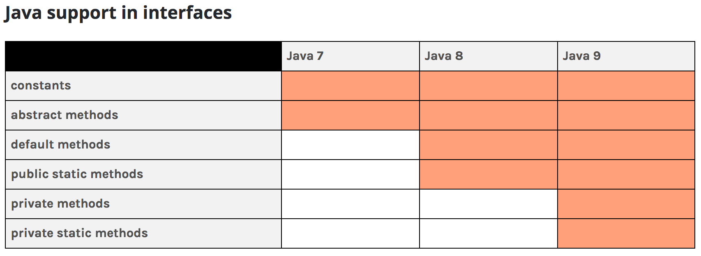

Java 9 Introduction
Biggest upgrade to Java platform standard edition, coming after 3 and a half years.
Definitely not possible to cover all of them, here.
Language
Language Changes
Language
Private Methods in Interfaces
Aimed to allow sharing of common code between default and static methods.
private abstract and private default method signatures result in compile-time errors.
Links:
Language
Collections - Factory Methods
Factory methods on collections allow ease of declaration/instantiation.
Factory methods clean up existing verbose means of construction:
Most developers first instantiate a collection
Then, they invoke add(...) or put(...) methods.
Alternatively, some use Collections factory methods to initialize from an inline Array.
List.of("one", "two");Map.of("key1", "val1", "key2, "val2");Links:
Language
Optional - Enhancements
ifPresentOrElse() – Checks the presence of a non-null value, else, invokes the Runnable.or() – Always return an optional.
Wrap and return an Optional of the current value if not null.
If current value is null, return Optional by invoking the specified Supplier.
stream() – Returns a sequential stream containing only the value, if the value is non-null.Links:
Language
Stream - Enhancements
takeWhile() and dropWhile() to proces a stream until a condition is met.ofNullable() returns a stream of 0 or 1 elements based on the value being null.iterate() overloaded to a 3 param method similar to an old-fashioned for loop.Links:
Language
Concurrency - Enhancements
Interfaces supporting the Reactive Streams publish-subscribe framework,
New class Flow.Publishers produce items consumed by one or more Subscribers, each managed by a Subscription.
Support for a reactive stream Pub-Sub framework introduced.
Fully complies with the reactive streams manifesto. (http://www.reactive-streams.org/ ):
process a potentially unbounded number of elements in sequence asynchronously passing elements between components with mandatory non-blocking backpressure.
Requires a Publisher, Subscription, Subscriber and a Processor.
No N/W- or I/O-based java.util.concurrent components for distributed messaging, in JDK9.
Enhancements to the CompletableFuture API introduced.
Time-based enhancements enable a future to complete with a value or exceptionally after a certain duration.
Subclass enhancements make it easier to extend from CompletableFuture.
Links:
Language
Deprecation - Enhancements
History:
Deprecation was a javadoc feature via @deprecated annotation in the comment.
The javadoc comment was limited in visibility since it was in documentation.
New code annotation @Deprecated introduced in Java 5.
The annotation has two (optional) parameters since Java 9:
forRemoval: Boolean indicating a hint to remove from future releases, if true.since: String representing version when deprecation was set.
New deprecation parameters clarify if an API may be removed in the near future.
New jdeprscan scans jars or any other aggregation of classes deprecated API usage.
Links:
Language
New Stack-Walking API
Changed from StackTraceElement to StackWalker instance.
StackTraceElement required an all-or-nothing fetch, and was expensive.StackWalker is thread-safe, filter-enabled and skip-enabled.Stack-walking API enables lazy access and easy filtering in stack traces.
Supports both long and short walks.
long walks - traverse the entire stack.short walks - filter to - or - skip to specific frame.
The short walks reduce the cost of analyzing all frames.
Caller has an option now to explore only the top frames.
Links:
Language
Compact Strings
Initiated in Java 6 as "compressed strings", deprecated in Java 7 and removed in Java 8.
Flag needed to be enabled (default was off), see the + below.
Old flag: -XX:+UseCompressedStrings
"experimental feature, ... ultimately limited by design, error-prone, ... hard to maintain" - A. Shipilev.Pointed to a byte[] if string only had 7-bit ASCII else to char[] .
String operations depended on char[] for operations, hence was non-optimal.
Replaced above with Compact Strings .
Every string now a byte[] representation with an encoding field flag.
Encoding field can determine if conversion from byte[] to char[] is needed.
New flag is enabled by default .
-XX:-CompactStrings to disable.
Links:
Language
Few Other Language Enhancements
Profiled - lightly optimized. Other two - longer lifetime.
JEP 213 - Milling Project Coin: http://openjdk.java.net/jeps/213 :
Allows @SafeVarargs on private instance methods (typo in JEP, there is no @SafeVargs ).
Allows final variables as a resource in try-with-resource statement.
Allows diamond operator with anonymous classes if the argument type is denotable.
JEP 197 - Segmented Code Cache: http://openjdk.java.net/jeps/197 :
Non-method code heap cache (compiler buffers, bytecode interprter etc.)- long lifetime cache .Non-profiled or more static code (fully optimized code) - long lifetime cache .Profiled code (lightly optimized) - short lifetime cache .
Process API improvements - https://docs.oracle.com/javase/9/core/process-api1.htm
Comprehensive list of JDK 9 features.
Assorted Changes
Ungrouped Important Features
Garbage Collection
New Default GC - G1GC
Originally introduced in Java 7 and targeted for Java 8.
No more PermGen !!!
JVM now uses a metaspace (curtailing usage of available memory).
Heap divided into ~2048 equal sized regions .
Regions get marked as Eden, Survivor or Old as needed.
GC focusses on garbage-heavy regions == STW (Stop-The-World) cycles are shorter.
With very minor or no tweaks, * most * code will see performance gains.
Links:
Versions
Version String Scheme
Caveat Emptor: Version strings in- and post-Java 9 may vary!
Version string scheme in Java 9 is $MAJOR.$MINOR.$SECURITY_PATCH.
Replaces the confusing collision of version and build numbers in prior versions.
This change may be short-lived due to a newer proposal from Oracle.
Proposal for Long-Term-Support (LTS) versioning based on $YEAR.$MONTH .
Implies a release every six months.
Java 10 may be known as Java 18.3 or Java 18.9 (March or September release).
Links:
Compiler
Compiler Enhancements
A --release option added as a new compiler directive.
Was not sufficient to just set the -source and -target options to the older value.
The bootclasspath had to also be set to correspond to the older release.
Forgetting the bootclasspath may have resulted in use of unsupported APIs on the target.
The new --release option will prevent any random use of unsupported API.
Single flag (--release) to cross compile.
Supported releases follow the "one plus three back" policy same as prior versions.
Supported release targets are 6, 7, 8, and 9.
Restrictions apply when using the --release for module support (JDK 9, for instance).
Links:
Language
Few Other Enhancements
New Compiler Control supersedes and is backward compatible with CompileCommand.
New DTLS (Datagram Transport Layer Security) “TLS over Datagram” protocol support.
Compiler Control:
A compiler directive is an instruction that tells the JVM how compilation should occur.
Directives are a powerful tool for writing small, contained, JVM compiler tests.
Compiler Control is useful for creating workarounds for bugs in the JVM compilers.
Modularity
Java Plaform Module System
Prior dependency image: https://bugs.openjdk.java.net/secure/attachment/72525/jdk.png
Aims to reduce the large and growing size of the java package ecosystem.
Allows splitting the JDK in smaller units (modules).
Root module called java.base.
Leads to subsequent deprecation/removal of some vestigial packages.
Dependencies packaged as .jmod files.
New tools such as jlink to create custom runtime bundles.
Module path to replace classpath.
Links:
Modularity
JDK 9 Modularity
Restructures the JDK and JRE runtime images - as modules.
New images improve performance, security, and maintainability.
Modularity allows creation of custom configurations.
New URI scheme for naming modules, classes/resources stored in a runtime image.
No more rt.jar and tools.jar in libs.
Links:
Modularity
Java Linker: jlink
jlink is responsible for assembling and optimizing modules.jlink also links transitive dependencies.Is a descendant of jrecreate used to build EJDKs.
It produces a custom runtime image that reduces the size and complexity of the deployment.
Java always had dynamic linking, jlink introduces optional static linking.
This optional static linking phase is called link time that occurs between compile and run time.
Links:
Tooling
Tooling Changes
Tooling
JShell
Tooling
Enhanced JavaDoc
Tooling
Better Java Control Panel
Improved presentation and grouping of options in the control panel.
Information easier to locate, no modal dialog boxes, search field is available.
Less useful APIs deprecated - web browsers removed Java browser plugin support.
Links:
Challenges
Migration Challenges
features ".
sun.misc packages).
http://openjdk.java.net/jeps/261#Risks-and-Assumptions
https://blog.codefx.org/java/java-9-migration-guide/
Challenges
Illegal Access to internal APIs
WARNING: An illegal reflective access operation has occurred
Most obvious fix is to stop depending on internal APIs.
If depending cannot be avoided, at least acknowledge and set a flag to:
--add-exports $module/$package=$mymodule--add-opens $module/$package=$mymoduledeep reflection ) types of the module to be accessed by mymodule.
Use jdeps to track down dependencies on internal APIs.
Special search is needed for reflective access: --illegal-access=$parameter
--illegal-access=permit default for JDK 9. Access to all unnamed modules.--illegal-access=warn warning message for each illegal reflective-access operation.--illegal-access=debug warning and stack trace for each illegal reflective-access operation.--illegal-access=deny disable all illegal reflective-access operations except for those enabled by above command-line options. Future default.
Challenges
Java EE module separation
Java EE modules are not included in the module path.
java.activation with javax.activation package.java.corba with javax.activity, javax.rmi, javax.rmi.CORBA, and org.omg.* packages.java.transaction with javax.transaction package.java.xml.bind with all javax.xml.bind.* packages.java.xml.ws with javax.jws, javax.jws.soap, javax.xml.soap and all javax.xml.ws.* packages.java.xml.ws.annotation with javax.annotation package.
Work towards declaring a regular dependency in the module's declaration.
Until you have that, --add-modules $module is the tactical fix.
Either add individual modules as you need them.
Or add java.se.ee to get access to all Java EE modules.
Challenges
Split package handling
A module is not allowed to read the same dependency package from more than one module.
In fact, no two modules are allowed to contain same package (think duplicate dependencies).
The module system complains if it finds split packages. Two pathways exist here:
Rather than a few classes, the code needs a replacement for an entire existing module.
Tactical fix for a few classes, is to patch
Use the --patch-module $module=$artifact to patch the module.
An example is the @Nonnull (JSR 305) and java.xml.ws.annotation module.
Use --patch-module java.xml.ws.annotation=path/to/jsr305-3.0.2.jar.
As a strategic fix, determine how to remove such split.
Challenges
Deprecation of Internal API
Divided into two broad categories:
Non-critical internal APIs : Functionality available either in public JDK or via third-party libs.Critical internal APIs : Functionality cannot be available outside of the JDK.
Critical APIs with replacements in JDK9 are deprecated in JDK9.
Such replaced API will either be encapsulated or removed in a future version of JDK.
Marked for deprecation (with no replacements in Java 9):
Links:
Challenges
New Version strings
Several tools both open source and bespoke depend on java versions.
More than likely one of the following properties is used to check versions:
java.versionjava.vm.versionjava.runtime.versionjava.specification.versionjava.vm.specification.version
Replace above with the new Runtime.Version class.
Compatibility to older versions of java can be retained by aiming to build a multi-release jar.
Links:
Java 9 That's all we have time for! HAPPY CODING !
 @CGuntur
@CGuntur
 Chandra Guntur
gh: c-guntur
http://cguntur.me
Chandra Guntur
gh: c-guntur
http://cguntur.me